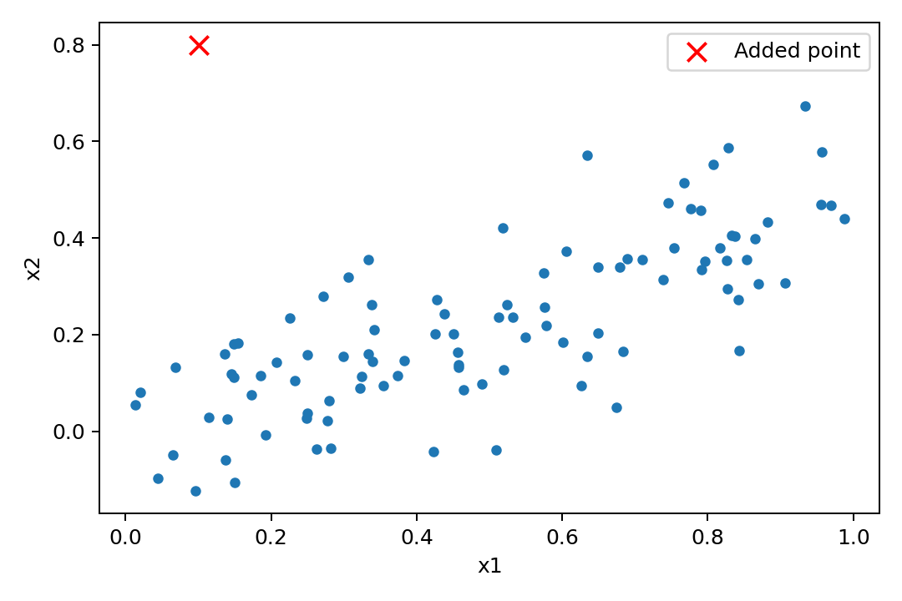

代码 3.7-13 · 第 14 题：加入测量有误的新观测
按完整 Notebook 的顺序运行；本块可能依赖前面的变量。3.6—3.7包含教材真实数据与模拟实验；全样本统计分析不等于独立测试评估。
逐步读代码
pd.concat按行拼接原输入表与新增一行；ignore_index=True重新设置连续行标签。响应用np.concatenate按同样顺序拼接，保证配对。[-1]表示最后一个观测。重复拟合后分别查看新点在不同模型中的杠杆、外学生化残差和Cook距离；异常与高杠杆是相对于具体模型而言。
实际运行输出
both
coef SE t p
const 2.06179 0.19233 10.7201 3.33427e-18
x1 0.857545 0.466483 1.83832 0.0690444
x2 2.26632 0.704713 3.21595 0.00176171
R2=0.291628, RSS=86.185210, RSE=0.937785
new point h, external residual, Cook: 0.3476716196142664 2.7837306228248013 1.2879875619115893
x1_only
coef SE t p
const 2.07394 0.201162 10.3098 2.30955e-17
x1 1.87605 0.358296 5.23602 9.23253e-07
R2=0.216871, RSS=95.280706, RSE=0.981036
new point h, external residual, Cook: 0.030283401255103554 4.179207000385163 0.23382962084011039
x2_only
coef SE t p
const 2.28401 0.151381 15.0879 2.07432e-27
x2 3.14585 0.523593 6.0082 3.12797e-08
R2=0.267201, RSS=89.157206, RSE=0.948988
new point h, external residual, Cook: 0.1102066358797133 1.3452239439030023 0.11115794899921298
